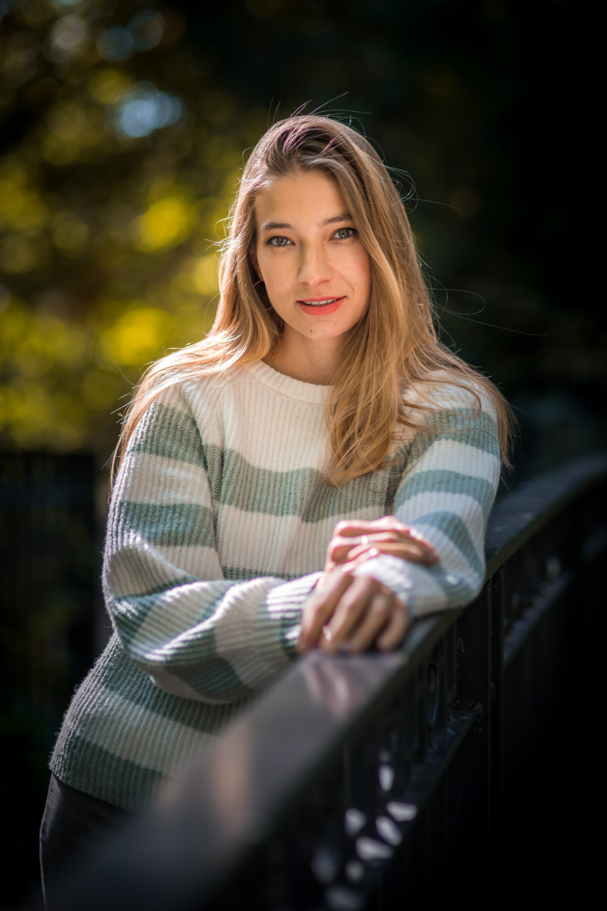
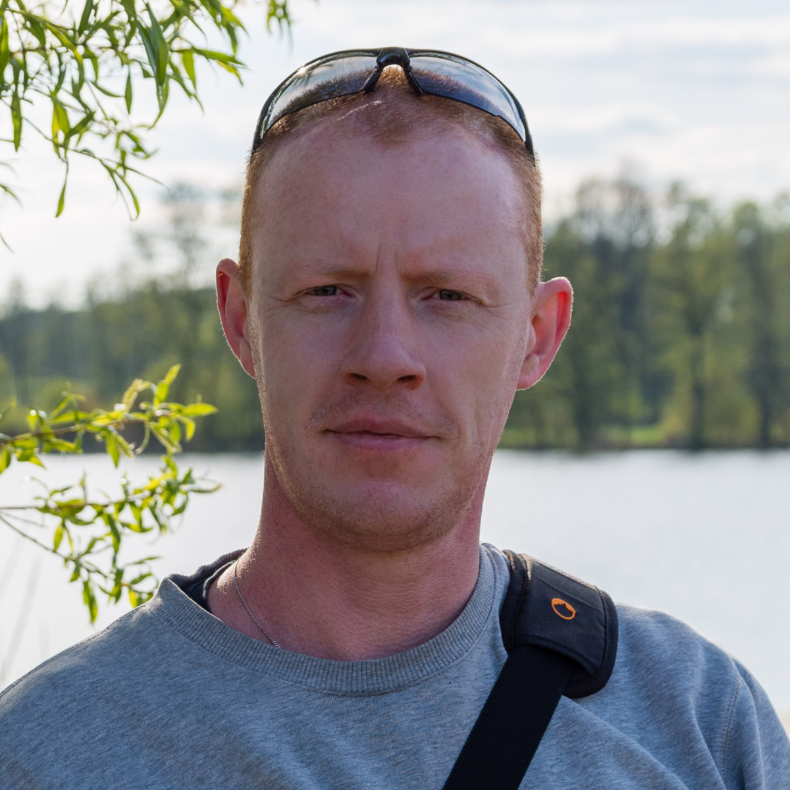

Pakiet Mini
Na pierwszy raz
Mała dawka pewności siebie. Kilka pięknych, profesjonalnych kadrów, od których łatwo zacząć.
- Do 45 minut sesji w plenerze
- 5 wybranych i w pełni wyretuszowanych ujęć w wersji cyfrowej
350 zł
Chcę tę sesjęFotografia portretowa dla kobiet · Poznań
Bez pozowania i bez stresu, za to z kadrami, do których będziesz wracać.

Poprowadzę Cię krok po kroku: jak stanąć, gdzie spojrzeć, co zrobić z rękami. Ty po prostu bądź sobą.
Rozmawiamy przed sesją, w jej trakcie i po niej. Wspólnie ustalamy pomysły i stylizacje, żebyś czuła się pewnie przed obiektywem.
Pracuję na pełnoklatkowym systemie Pentax. Daje miękką plastykę obrazu i głęboki bokeh, a każdy kadr ma artystyczny charakter.
Dynamiczna przestrzeń Poznania albo spokojna zieleń. Wybierzemy tło, które pasuje do Ciebie i do nastroju zdjęć.
Portfolio
Fotografuję portrety kobiet: od subtelnych, naturalnych kadrów w świetle dziennym po zmysłowe, filmowe ujęcia, w których liczą się półcienie, spojrzenie i bliskość. Poniżej zobaczysz oba nastroje. Wybierzemy ten, który jest Twój.
Sesje
Pakiet Mini
Mała dawka pewności siebie. Kilka pięknych, profesjonalnych kadrów, od których łatwo zacząć.
350 zł
Chcę tę sesjęPakiet Standard
Więcej czasu, więcej kadrów, więcej Ciebie. Od naturalnych ujęć w zieleni po kadry z charakterem.
600 zł
Chcę tę sesjęPakiet Biznes
Portrety skupione na Twojej twarzy i pewności siebie. Na LinkedIn, do CV, na stronę www i do materiałów PR.
300 zł
Chcę tę sesjęJak to wygląda
Piszesz do mnie, a my ustalamy styl, miejsce i stylizacje. Bez presji, z Twoimi pomysłami.
Spokojnie i bez pośpiechu. Prowadzę Cię przez każdy kadr, a Ty możesz próbować różnych pomysłów.
Wybieram najlepsze ujęcia i starannie je retuszuję, żeby każde było gotowe do pokazania.
Dostajesz gotowe zdjęcia w wersji cyfrowej, w ekspresowym tempie (najczęśćiej 7 dni).
Poznajmy się
Jestem Maciej. Fotografuję portrety w Poznaniu i okolicach. Zanim zrobię pierwsze zdjęcie, posłucham, jaka jesteś i co chcesz pokazać.
Każdy portret to dla mnie intymna opowieść o człowieku: o jego uczuciach i autentycznym wdzięku. Resztą zajmie się światło, rozmowa i dobry nastrój.

Opinie
Nie otrzymałam zdjęcia, które by mi się nie podobało. Co więcej, niektóre z nich zawisły na ścianie. Atmosfera na sesji super.
Jestem zakochana w zdjęciach, które otrzymałam. Pełen profesjonalizm i rewelacyjny kontakt przed, po i w trakcie sesji. Zdjęcia przyszły w ekspresowym tempie.
Świetny fotograf, godny polecenia. Komunikacja przed sesją, w jej trakcie i po niej sprawia, że wszystko przebiega bez stresu. A efekt? WOW.
Pytania
Nie. Podpowiadam Ci, jak stanąć i gdzie spojrzeć. Większość kobiet po kilku minutach przestaje myśleć o aparacie.
Coś, w czym czujesz się dobrze. Stylizacje ustalamy razem przed sesją. W pakiecie Standard możesz zmienić ją dwa razy.
W Poznaniu i okolicach: w miejskiej przestrzeni, w zieleni albo w wybranych wnętrzach. Miejsce dobieramy do Twojego pomysłu.
W ciągu 7-14 dni od sesji. Dostajesz je w wersji cyfrowej, w pełni wyretuszowane.
Kontakt
Odpowiem na Twoje pytania i pomogę zrealizować Twoją wizję. Omówimy szczegóły sesji.